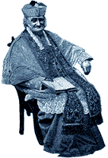

Original Sin of the Month
Original Sin of the Month
|
Boys Will Be Boys?

THE THREE OF THEM couldn't look more like standard-issue American boy-flesh. Tousled blonde heads, bodies ruddy from an afternoon's soccer practice, that weird greeny mermaid glow from the public pool highlighting their hair, scabs and freckles and long skinny legs and shoulders just broadening with the hint of early pubescence. I can hear them but they can't see me, because I'm shielded by blackberry brambles where I sit reading in the sun at the bottom of the garden. I am pulled away from the page by their conversation. Each of them carries an impotent plastic weapon, the foam arrows long lost, crooked in their arms as they argue over who gets to be the girl. My two sons are fervently pleading for this pleasure, but their friend, who is 11, is prevailing. He gets to be the girl, and therefore gets to make up all the rules of the game and have the most influence in their pretend summer universe. My sons accept their defeat sagely, loping through the tall weeds after their buddy, who has transformed his gender without a shake of his hips, a slope of his shoulders, or any other mimic of girlhood. S/he is the leader. I had served coffee earlier that day to my friend Laurie, who is two weeks shy of delivering her third child. Her third boy child. Sitting hugely at my kitchen table, she had calmly related that she and her husband had both sat down and cried when they had learned it was a boy. I think back to my own childhood, rough-housing it through the wilderness behind our grandfather's house with my three male cousins. The worst, the most outrageous, insult that these three could deliver to each other would be shouted with an ugly wrinkled face of disgust that was oblivious to my gender: "You woooman!" "Am not!" was the stout retort before they fell upon each other with rough puppy fists.
LATER, having successfully trapped them in the car, I ask my sons why they were vying to be the girl. "Being a girl is the best," pipes up the eight-year-old. "In every book I read, the girls are the most powerful." The girls are the most powerful? When I was busy growing up in the '70s, my mother--who spent every Thursday night organizing with her women's group, and who disastrously followed Germaine Greer's admonition to give up panties (it was a disaster when a four-inch grasshopper hopped up her jeans and she wasn't radical enough to whip them down in public without the damn panties and had to run a mile home beating her leg)--would tell me of her childhood dreams to be a boy. "Boys could do anything they wanted," she said of her own childhood, plaiting my hair in our San Francisco flat. "They could climb trees and build forts and stay out after dark. Now you can too." And so I did, until a filthy cloud of adolescence dropped over me and I decided to spend all my time in black velvet listening to Todd Rundgren, mooning over such death-trapped morte-poets as Anne Sexton and Sylvia Plath, sneaking cigarettes, and kissing men I didn't like. Raised with unconventional convention in a rising middle class, I had to fight through my 20s to get back to the simple humanistic feminism my mother had intended for me to have, and which I misplaced while reading a million glossy magazines, sitting in a thousand movie theaters, and spinning the mouth-to-tail circle of self-hatred that my friends and I shared. And now I hear my own children arguing to discard their gender, hear my friend's sadness at raising another son, and think of my lover's bright-eyed admonition when I had thought I was being so wise. "I'm raising my boys as girls," I had boasted. "What does that mean?" he asked. "To be kind and thoughtful and honest and creative and smart and good to others," I had airily replied. "Oh," he said. "You mean that you're raising them to be people." Yeah. People. It breaks my heart to hear my sons wishing to have the power of another gender. It breaks my heart to think of my mother coming in at dusk while her younger brother still zoomed the neighborhood. And it breaks my heart to remember myself and the easy relinquishments I stupidly made to gender when I was young. I learn slowly. I made the "boys as girls" remark just last month. But I am trying to remember: People. The human race. All of us together.
Have something on your mind? Want to share it with thousands of others? Don't be shy, air your misgivings, mistakes, triumphs, and windfalls with the populace.
Back to the Table of Contents.
Surf the Boulevards network
to other great alternative
content sites.
|